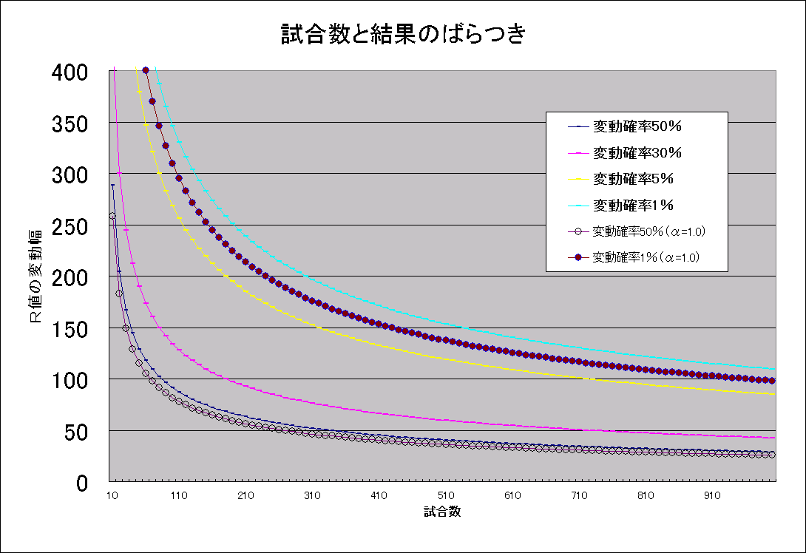

平均順位の偏りと信頼できる実力評価 とつげき東北
目的：
麻雀の「実力」を試合結果だけから評価するのは簡単ではない。
例えばリーチ勝負で、どちらが先に相手の当たり牌をつかむか、で、１位になるか４位になるかが決まったりする。
「長い目で見れば〜〜した方が勝てる」などと言われるが、実際どの程度「長い目」で見ればよいのかさえ理解されていないのが現状だろうと推察する。
打つところを後ろから見ていれば、だいたいの「強さ」はわかるような気もするのだが、どうも見る人の好みや打ち方によって評価はまちまちになるし、なにより定量化できる方法ではないだろう。
「最近の試合の平均順位」から実力を評価するのは、シンプルだが非常に客観的で、合理的で、信頼できる方法の一つである。
ここでは、試合数・順位分布による平均順位の偏りの度合いを定量化し、ある信頼度で実力を計測したい場合に必要な試合数を求める計算方法などを紹介する。
なお、実力の計測という課題は、麻雀研究の全ての基礎となる。研究を志す者は、以下について熟知しておくべきである。
理論計算：
1試合あたりでｊ位をとる確率がＰ（ｊ）であるプレイヤーを考える。
平均順位Ｊ＝ΣｉＰ（ｉ）である。
（なおここでは、Σはｉ＝1〜4を表すものとする）
1試合終了時の順位の分散はΣＰ（ｉ）・（ｉ−Ｊ）^2だから、ｎ試合終了時の順位合計の分散は
ｎΣＰ（ｉ）・（ｉ−Ｊ）^2
と書ける。
一般にｎ試合終了時平均順位の、「真の平均順位」からの変化分の標準偏差σは
σ ＝ √｛Ａ/ｎ｝
ただしＡ＝ΣＰ（ｉ）（ｉ−Ｊ）^2、一般的にはＡ=1.25弱
と表せる。
Ｐ（ｊ）：1試合あたりでｊ位になる確率、Ｊ：1試合あたりの平均順位、ｎ：試合数
なお、安定Ｒの変化分で表示すると
σ（Ｒ） ＝ 1200 × √｛Ａ/ｎ｝
ただしＰ（ｊ）：1試合あたりでｊ位になる確率、Ｊ：1試合あたりの平均順位、ｎ：試合数
下図は、Ａ=1.25の場合と、Ａ=1.00の場合の一部の、試合数と結果の変動関係を、各々の信頼度でグラフにプロットしたものである。
図1：試合数と結果のばらつき（Ａ=1.25，Ａ=1.00）

Ａ値について：
Ａ値は、「（順位分布の特徴による）成績のばらつきやすさの指標」であると言うことができる。
今後Ａ値は「順位分布係数」「偏りのＡ」などと呼ばれることがある。
成績（平均順位）の分散は、順位分布係数Ａに比例し、試合数ｎに反比例する。
仮に、Ｐ（1〜4）＝0.25、つまり1位2位3位4位すべて、25％の確率でとるプレイヤーを考えると、
Ａ＝ΣＰ（ｉ）・（ｉ−Ｊ）^2＝5/4だから、
1〜4位を等しく取るプレイヤーの、ｎ試合終了時平均順位の「真の平均順位」からの変化分の標準偏差σは
σ ＝ √｛1.25/n｝
ｎ：試合数
となる。
安定Ｒ表記では
σ（Ｒ） ＝ 1200×√｛1.25/n｝
ｎ：試合数
である。
平均的なプレイヤーのＡは1.25であるのに対して、P(1)＝0.3、P(2)＝0.27、P(3)＝0.23、P(4)＝0.2、平均順位2.33の「勝ち組」の人のＡはどうだろうか。
Ａ＝0.3*（1-2.33）^2＋0.27*（2-2.33）^2＋0.23*（3-2.33）^2＋0.2*（4-2.33）^2＝1.2211
と計算でき、
σ（Ｒ） ＝ 1200 × √｛1.2211/ｎ｝
となる。
P(1)＝0.3、P(2)＝0.2、P(3)＝0.2、P(4)＝0.3、平均順位2.5の「かなり極端な打ち手」のＡが、1.45となった。
Ａの値はこのようにおおむね1.2〜1.45前後の値であり、平均順位のばらつきは順位分布の変化にはあまり依存しないことがわかる。
普通、順位分布は上記に示したような「現実的な」値を取るから、通常は 1.2≦Ａ≦1.45 程度についてだけ考えれば充分である。
ただしこの方法は、必ずしも「〜〜試合の中からよかったｎ試合を取り出す」場合の平均順位のばらつきを計算するのに適した方法ではない。そのような場合は別の議論が必要である。
Ａ値の変化（および最大値と最小値）に関する補題：（やや難解。普通の読者は飛ばしてください）
Ｐ（1）=ｘ、Ｐ（2）=ｙ、Ｐ（3）=zとすると（ただし0<=x<=1、0<=y<=1、0<=z<=1、0<=x+y+z<=1）、平均順位Ｊ=ｘ+2ｙ+3ｚ+4（1-ｘ-ｙ-ｚ）と表すことができ、
Ａ = ｘ｛ｘ+2ｙ+3ｚ+4（1-ｘ-ｙ-ｚ）-1｝^2+ｙ｛ｘ+2ｙ+3ｚ+4（1-ｘ-ｙ-ｚ）-2｝^2+ｚ｛ｘ+2ｙ+3ｚ+4（1-ｘ-ｙ-ｚ）-3｝^2+（1-ｘ-ｙ-ｚ）｛ｘ+2ｙ+3ｚ+4（1-ｘ-ｙ-ｚ）｝^2
のように表現できるが、これを気合で展開すると、
Ａ ＝ 9ｘ（1-ｘ）+4ｙ（1-ｙ）+ｚ（1-ｚ）-12ｘｙ-6ｘｚ-4ｙｚ
＝ -（3x+2y+z）^2+9x+4y+z
ときれいに展開できる（ﾊｧﾊｧ）。
Ａの、最大値と最小値を求めよう。
まずは簡単のために1位と4位のみを取る場合、つまりＰ（1）=x、Ｐ（2）=y=0、Ｐ（3）=z=0と置くときを考えると、
Ａ=9ｘ（1-ｘ）=-9x^2+9x
より
dＡ/dx ＝ -18x＋9
から、x=0.5においてＡは最大値2.25を取ることがわかる。
これをあらゆる可能な順位分布に一般化する。
Ａ=9/4-2y-2z-（3x+2y+z-3/2）^2
と変形すると、明らかに
A＜9/4
等号成立はy=z=0かつ3x+2y+z-3/2=0の時である。
以上より、Ａの最大値となる順位分布は
Ｐ（1）=x=0.5、Ｐ（2）=y=0、Ｐ（3）=z=0、Ｐ（4）=1-x-y-z=0.5
であり、そのときのＡの値は2.25であることが証明された。
逆に最小値について考えると、特定の順位のみを取り続ける場合に限ってＡは最小となり、Ａ=0となる。これは自明である。
<参考>
x+y+z=k、x+y=mとして
∂Ａ（x,m,k）/∂x＝-2x-2m-2k+5
∂Ａ（x,m,k）/∂m＝-2x-2m-2k+3
∂Ａ（x,m,k）/∂k＝-2x-2m-2k+1
ｄＡ ＝ ｛∂Ａ（x,m,k）/∂x｝ｄx＋｛∂Ａ（x,m,k）/∂m｝ｄm＋｛∂Ａ（x,m,k）/∂k｝ｄk
ｄＡ ＝ （-2x-2m-2k+5）ｄx＋（-2x-2m-2k+3）ｄm＋（-2x-2m-2k+1）ｄk
これらの式から、Ａの変化のしかたを、実際にＡを計算することなく簡単に把握できる。
例えば「トップ率を少し増やし、4位率をそれと同じだけ減らし、2位率と3位率とを一定に保つ場合」だと、ｄm=ｄk=ｄxとするので、
ｄＡ ＝ （-2x-2m-2k+5）ｄx＋（-2x-2m-2k+3）ｄx＋（-2x-2m-2k+1）ｄx
＝ （-6x-6m-6k+9）ｄx
を考えれば良い。
トップ率0.5、2位率0、3位率0の場合、つまりx=0.5,m=0.5,k=0.5の近傍において、トップ率と4位率だけを、微小なeだけ変化させる場合の挙動を考えよう。
トップ率0.5+e、2位率0、3位率0の場合、x=0.5+e、m=0.5+e、k=0.5+eとなり、ｄＡ ＝ -18e
「y=0,z=0という条件下での、x=0.5の近傍においては」次のような増減表が描ける。
| x | ・・・ | 0.5 | ・・・ |
| dＡ | + | 0 | - |
| Ａ | ↑ | 極大値 | ↓ |
順位率が複数同時に、しかもその変化率にも差があるような変化が生ずる場合に拡張して論じよう。
一般に、1位率x、2位率y、3位率zの近傍においてxがx+p、yがy+q、zがz+rに変化する変化を考えるとき、p,q,rは十分に小さいので2次の項は無視してよく、
ｄＡ ＝ （5-Ｂ）p＋（3-Ｂ）（p+q）＋（1-Ｂ）（p+q+r）
ただしＢ＝6x+4y+2z
でｄＡを評価できる。
正負判定のみに用いる場合は、p、q、rともに小数だと計算が面倒なので「10」「5」「-5」などの大きな値にしても問題はない。
さらに複雑な変化を比較的簡単に追うこともできるが、数学パズルとしてはともかく、麻雀研究にとってはさして重要な研究でもないので読者への課題とする。
みかけＲ値の標準偏差と、Ａ値との関係を調べ、「Ｒ変動が激しいタイプ」が実在するかどうか調べてみるのも面白そうである。
信頼度を決めて実力計測を行うときに必要な試合数：
例えば、平均順位のばらつきを0.05（安定Ｒ60）以内に抑えたい場合（95％の信頼度で）、2σ（Ｒ）＝2×1200×√｛Ａ/n｝＜60となるような試合数ｎを取れば良い。
（標準正規分布表）
Ａ＝1.25だとすると
2400×√｛1.25/ｎ｝＜60
より、
5760000×1.25/ｎ＜3600
計算して
ｎ＞2000
となる。
2000試合することによって、平均順位のばらつきは0.05以内に収まることが計算できる。
ちなみに100試合した場合の平均順位のばらつきの標準偏差は0.12位（Ｒ134.16）であり、20人に1人は実力より0.24位（Ｒ268）も高い成績を収めることが可能である。
麻雀において平均順位0.24位という差は絶望的であって、数十人の参加者のいる大会でたった100試合の結果から「優勝」「準優勝」など決めて実力を計測することには全く何の意味もないことがわかる（もちろん、参加者のそれぞれの実力に平均順位にして0.2より大きいような差がある場合は別だが）。
順位分布の違いによって、変動が同じになように試合数を微調整すべきか：
Ａの値が異なる、つまり順位分布が異なる場合に、Ｒ誤差を同じにしようとするとき、必要な試合数を微調整すべきだろうか？
√{Ａ1/n1}＝√{Ａ2/n2}
より、明らかに
ｎ2/ｎ1＝Ａ2/Ａ1
が成立する。
相当極端でない限り、通常、Ａは1.2近辺の値だから、Ａ2/Ａ1＝1.45/1.2＝1.208程度で考えればよい。
変動が同じになる試合数は、打ち方や順位分布が変わってもあまり変わらず、せいぜいある打ち方で必要な試合数の1.208倍程度をこなせば充分となる。
ところで、試合数がNから1.208Nに変化した際に、安定Ｒの変動分をどの程度減少させられるかを考えてみる。
2σ（Ｎ、Ｒ表示）=2×1200×（1.25/Ｎ）^0.5
2σ（1.208Ｎ、Ｒ表示）=2×1200×（1.25/（1.208Ｎ））^0.5
の差をとって
安定Ｒ変動差（95％）＝2×1200×1.118÷｛ （1/Ｎ）^0.5 − （1/1.208Ｎ）^0.5 ｝
＝2400×1.118×（0.021/1.021）÷Ｎ^0.5
＝242÷Ｎ^0.5
これより、
安定Ｒ変動差（95％）＜30程度になるＮは、Ｎ＞65
安定Ｒ変動差（95％）＜10程度になるＮは、Ｎ＞586
が計算できる。
Ａの変化（順位分布の変化）によって、本来計測に必要な試合数は増加するが、586試合以上程度の試合数であれば、安定Ｒ変動差において10以下の誤差しか生じない。
実際には、そもそも安定Ｒの標準偏差は1000試合においても50近くあり、順位分布が違うからといって1000試合→1208試合に増加して計測する意味はそれほどない（その変更によっては、安定Ｒ変動差は7も変化しない）。
以上から、次のことが結論できる。
順位分布が違っていても、600試合などある程度以上の試合数であれば、順位分布の違いによる変動分が同じになるように試合数を微調整する必要はない。
打ち方（順位分布）にあまり依存せず、試合数のみによって実力の計測誤差（偶然による誤差）は表される。
直接対決によって勝敗を決定するのに必要な試合数：
もっと簡単に、ある人と別の人とのどちらが強いかを計測する手法として「何試合か直接対決して、各試合の勝ち負けの合計で勝負する」方法が考えられる。
この方法で勝敗を決定するために必要な試合数について考えてみよう。
N試合してK回勝ったとする。
仮に実力が等しいとすると、1試合あたりの勝率は1/2になるから、N試合中K回以上勝つ確率は
ΣNCｉ（1/2）^N （シグマは、ｉ=K〜N）
と表される。
N=100、K=60と取ればこの値は0.02844程度になり、棄却域5％程度で仮説「両者は互角の実力である」を棄却できることになる。
同様にN=30、K=20としても、値は0.0494となり、ある程度の実力比較ができることがわかる。
このようにして、5連勝、10試合中9勝以上、20試合中15勝以上、30試合中20勝以上、100試合中60勝以上、などの結果によって、両者の実力を比較することができる。
ただしこれはあくまでも「5％」の範囲の話であって、数多くの人と打った結果、たまたま何十人に1人の割合で「5連敗した相手」などがいることは自然なことである。
とつげき東北の、ある期間での、超ランで「5試合対戦した相手」は171名いたが、そのうち5連勝の相手は9名、5連敗の相手は2名であった。
数多くの対戦相手の中からたまたま5連勝や5連敗の相手を探して「勝っている」「負けている」と判断するのではなくて、互いに「1対1で勝負しよう」と決めてから上記の試合数をこなし、その結果で判断する必要があることに注意せよ。
一見、平均順位で比較することに対して少ない試合数で差がつくように感じるかもしれないが、平均順位とその変動で比較するのに比べて、「実力」測定の精度は悪くなる（余力があれば、勝つ場合の順位の組み合わせ、負ける場合の順位の組み合わせの平均を取って平均順位差の議論に持ち込んで考察してみよ）。ギャンブル性を増加させて、結果が早く出やすいようにしているに過ぎない。
しばしば、「じゃあ実際に対戦してみろ」などという売り言葉を耳にするが、わざわざ対戦して信頼できる勝敗をつけるには（相当の実力差がない限り）、大量の試合数（少なくとも数百試合〜数千試合、あるいは数万試合）が必要となる。
麻雀の仕組みがわかっている者は（極端な実力差があることが予想される場合を除いて）、このような愚昧な言葉を口にしない。